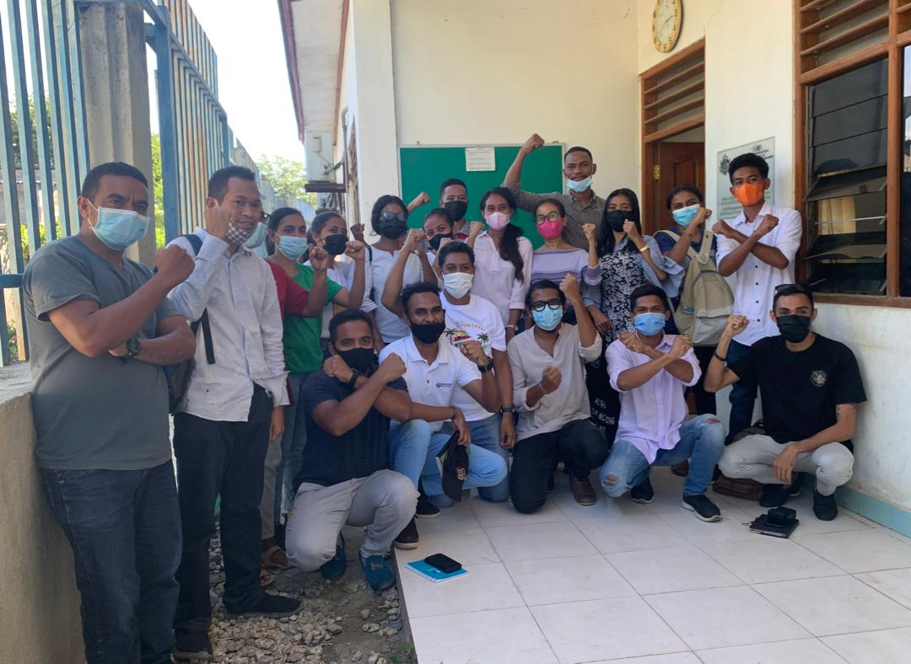

COVID-19 疫情於 2020 年初爆發之際，由於嚴格的邊境管制以及其他防疫措施，東帝汶成功地控制了新冠病毒的傳播。然而，該國的確診病例卻從 2021 年 3 月開始飆升。
一個直接的問題是疫苗接種的猶豫現象。東帝汶國民裡，包括一些醫護工作人員，因對當局的不信任，加上其傳統文化偏好傳統療法而非現代醫學，因此對疫苗普遍存有抵觸情緒。普及率在東帝汶幾乎達到 99% 人口的 Facebook，很快地就成為傳播 COVID-19 惡意不實訊息的媒介。這些訊息有些來自印尼，而當地人也會分享未經核實的影片和圖片。
東帝汶數位權社群很快就察覺到需要用當地語言創作可對抗此現象的資源，以促進大衆對 COVID-19 惡意不實訊息的認識。研究東帝汶的馬來亞大學副教授 Ying Hooi，在參與台灣民主實驗室舉辦的「公民社會對抗惡意不實訊息培訓者能力建構研習營」時，將這個關切與一名年輕的東帝汶公民運動人士 Fernando Ximenes 分享。他們兩人合力以當地語言德頓文將惡意不實訊息研習營的資料在地化，之後置於用德頓文建立的 Facebook 活動頁面，提供的資料包括一些資訊圖表和一支音樂影片。
為提升當地青年的媒體素養，團隊也與東帝汶記者協會（AJTL）合作，舉辦了為期一天的實體研習營，吸引了 20 多人參加。此外，團隊還製作三份資訊圖表，強調惡意不實訊息，特別是有關 COVID-19 的不實訊息之危害，以及媒體素養的重要性。這些資訊圖表受到研習營參與者在 WhatsApp 和 Facebook 上廣泛的分享。
當地電影和電視工作室 Malkriadu Cinema 協助製作了打擊 COVID-19 惡意不實訊息的音樂影片。他們邀請在東帝汶廣受歡迎的人物 Tiu Apati 在影片中客串露臉，希望能為影片帶來加分效果。Tiu Apati 雖無政治背景，也非公民運動人士，但他的參與對吸引群眾及增加群衆意識至關重要。
音樂影片《Hakoi Lia Hoax》 不僅在 Facebook 和 YouTube 上發布，也在當地電視頻道《TVE 娛樂》發布，在這些平台上累積了超過 3 萬 5 千次的觀看。從 Facebook 和 YouTube 上的回應可看出這支影片深受好評，觀賞者的留言評論包括呼籲「接種疫苗，對抗新冠」，以及「騙局滾蛋！」
該計劃仍在持續進行當中。團隊目前正在將資訊圖表和音樂影片翻譯為英文，以進一步提高民衆的意識。他們也正努力撰寫文章在當地和國際媒體上刊登，除了介紹團隊計劃，也教育公眾如何對抗 COVID-19 惡意不實訊息。